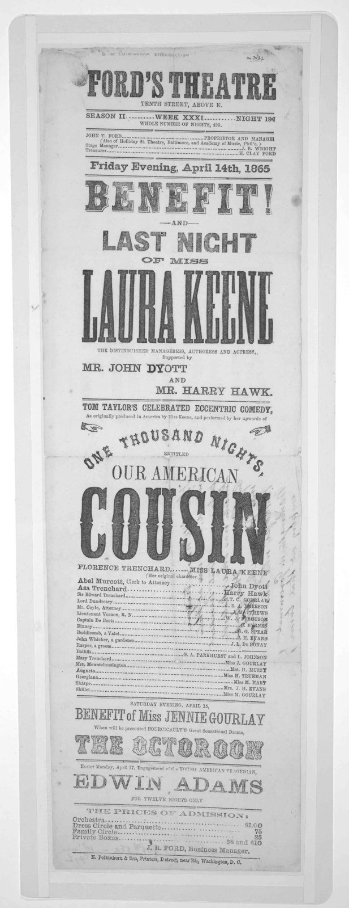

References / Poster / 452
Ford’s Theatre playbill
for *Our American Cousin*, 1865
The narrow playbill for the evening of Lincoln’s assassination stacks a dozen display faces, an arched line, and pointing hands down one centred column.
- Source
- Library of Congress, Printed Ephemera Collection: Ford’s Theatre … Friday evening, April 14th, 1865
- Creator
- H. Polkinhorn & Son, printers, Washington (imprint)
- Made
- 1865
- Style
- Victorian typography (agent-proposed, not yet reviewed by a person)
- Moods
- Theatrical, showy, busy
- Evidence
- Inspected the Library of Congress scan (rbpe 2040580c, Portfolio 204, Folder 58c; 1992 × 5165 px). LoC holds other copies of this playbill under other numbers, and some are later facsimiles, so details may differ between copies.
- Reviewed
- Rights
- Open license, stored. License: public domain. Rights policy
Context
LoC catalogues the bill as 1 p., 48 × 15 cm, Washington, 1865, in the Printed Ephemera Collection. LoC rbpe.2040580c.
The bill announces a benefit and the last night of Laura Keene in Tom Taylor’s Our American Cousin on Friday, 14 April 1865, the night Abraham Lincoln was shot at the theatre. The imprint reads “H. Polkinhorn & Son, Printers, D street, near 7th, Washington, D. C.”
Observed
- The bill is about three times as tall as it is wide, and every display line is centred.
- “FORD’S THEATRE” is in a condensed slab capital; “BENEFIT!” in a shaded Tuscan with split serifs; “LAST NIGHT” in a wide sans-serif; “LAURA KEENE” and “COUSIN” in very tall condensed Tuscan-style letters.
- “ONE THOUSAND NIGHTS,” is set on an arch, with a pointing hand on each side.
- Short centred dashes frame “AND” and “OF MISS” as small connecting lines between big ones.
- Thin and thick rules separate the sections. The cast list uses dotted leaders between role and actor.
- “THE OCTOROON” at the foot uses a decorated outline face, and “EDWIN ADAMS” a wide shaded roman.
- Black ink on white paper, with handwritten notes in the margin of this copy.
Why it belongs
The playbill is the theatre form of the style: the star’s name and the play title get the largest and most unusual letters, and the small lines read as connectives between them.
The arched line shows that printers bent the strict horizontal grammar only for one short line, as an ornament.
Borrow
Give names and titles the largest lines, and set the joining words (“and”, “of”, “entitled”) small between them.
Use dotted leaders for a list of roles, prices, or times.
Measured
Machine-extracted by tools/image-traits.py on . Full measurement.
- Mean chroma
- 0
- Palette
- #cfcfcf 33%
- #dbdbdb 27%
- #c0c0c0 9%
- #f2f2f2 7%
- #aaaaaa 6%
- #fefefe 4%
- #9e9e9e 3%
- #e7e7e7 3%

